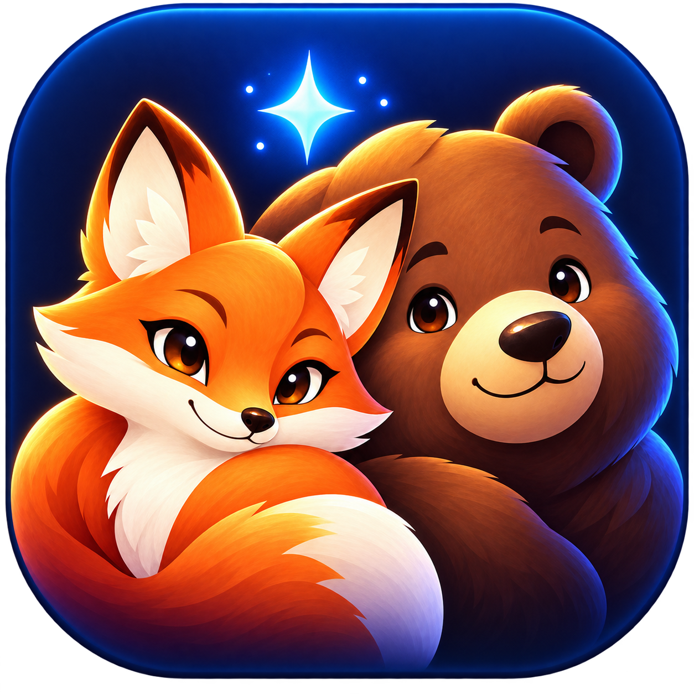

GOMFOX CREATIVE WORKSPACE
곰같은여우의 AI 스튜디오
한 곳에서 영상, 이미지, 음악, 3D 제작을 시작하세요. 원본 WanGP의 전문 기능은 그대로 유지됩니다.
무료 로컬 기본Windows 16GB 배려GPT 선택 · 기본 꺼짐
무료 제작 · 시작처음 실행프롬프트도움말
만들고 싶은 작업을 고르세요. 실제 플러그인에서는 카드를 눌러 안내를 표시합니다.
영상 제작움직이는 장면
이미지 제작사진과 그림
음성 · 음악소리 만들기
3D · 월드입체와 장면
v0.12 디자인 구조만 확인하는 오프라인 미리보기입니다. 실제 제작·탭 이동은 WanGP 내부 Gradio 플러그인에서 동작합니다. 새 UI 자산에 SVG를 사용하지 않습니다.